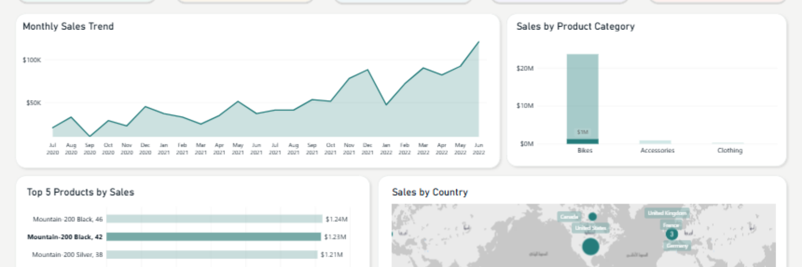

My Projects
Exploring data, AI, and web development through practical projects.

Sales Performance Dashboard
An interactive Power BI dashboard for analyzing sales performance, trends, and key business metrics through interactive visualizations.

Can Machines Think Like Us?
Evaluated large language models on Arabic and English verbal analogy questions using prompt engineering strategies to analyze their reasoning performance.


SCAN Dataset Standardization
Cleaned and standardized the SCAN verbal analogy dataset, reducing an average of 70 answer choices per question into a consistent four-option format.

StayAwake — Fatigue Detection
A driver fatigue detection system using facial features, a fine-tuned ResNet18 model, and real-time alerts.

Handwritten Digit Classification
Built a multilayer neural network from scratch with NumPy to classify handwritten MNIST digits and evaluate model accuracy and generalization.


Breast Cancer Classification
Built a binary Perceptron classifier to distinguish benign and malignant breast tumors using the Wisconsin Diagnostic Breast Cancer dataset.

Intelligent Route Planning
Implemented and compared BFS, Greedy Best-First Search, and A* Search to find routes from Arad to Bucharest using a weighted city graph.

WardThon — Login & Register
A front-end interface for login and registration, focused on form layout and visual design.